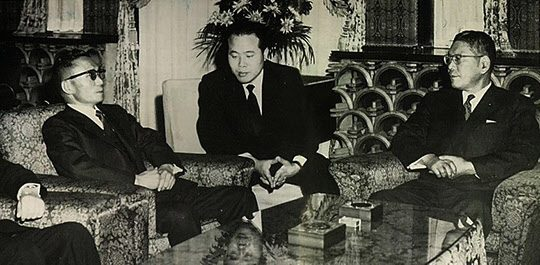
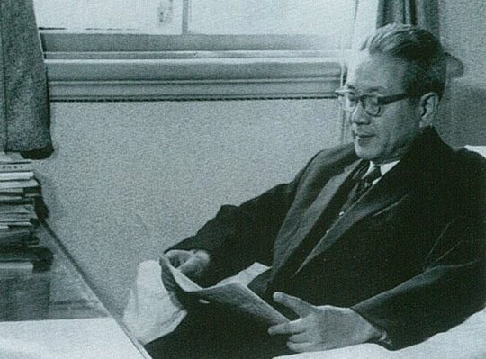
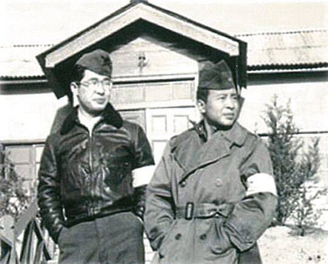
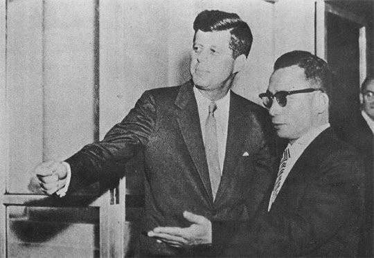

연재일 2014-09-02출처 조선일보 프리미엄조선 연재
1961년 11월 11일, 요즘 한국 젊은이들이 ‘빼빼로 데이’라 부르는 그날, 박정희가 통치자로서 최초 해외 순방에 나선다. 미국 케네디 대통령을 방문하는 길에 도쿄에 들러 일본 이케다 하야토(池田勇人) 총리와 만난다. 그리고 같은 시기에 정래혁 상공부 장관 일행은 도쿄에서 차관 도입 교섭을 위해 서독(독일)으로 향발한다.
박정희-이케다 회담에서 박정희의 목적은 조속한 한일회담 재개와 경제협력 유인에 있었다. 이승만 정권 때부터 지지부진하게 십여 년째 끌어오던 한일회담에 큰 활력이 투입된 것은, 그 집권기간이 너무 짧았던 탓에 전기와 후기로 나누기에도 주저되는 장면 정권의 말기(1961년 봄날)였다. 그때 양국 간 물밑 교섭의 수준은 이른바 식민지배상금(대일청구권자금)의 규모에 대한 구체적 수치까지 오가는 정도였다. 그러나 5‧16이 그것을 유야무야시켰다.
극단적 냉전체제 속에서 때마침 한반도를 둘러싼 국제정세는 한일회담 재개를 서두르는 박정희에게 유리한 국면이었다. 1961년 6월 미국을 방문한 이케다에게 케네디가 한일회담의 적극적인 재개를 권유한 가운데 그해 7월 평양의 김일성이 소련과 ‘상호방위조약’을 체결한 데 이어 중국과 ‘우호협력 상호원조조약’을 체결함으로써 한‧미‧일의 긴밀한 경제적 안보적 협력체제 필요성이 어느 때보다 강하게 대두돼 있었다.
박정희 스스로도 적극적으로 나갔다. 그해 7월 최덕신을 단장으로 하는 방일친선사절단을 파견하며 이케다에게 한일회담 재개를 요청하는 친서를 전달했던 것이다.

박정희의 첫 해외방문 정상회담인 대한민국 국가재건최고회의 의장과 일본 총리의 회담(박정희-이케다 회담)은 1961년 11월 12일 도쿄에서 이뤄진다. 그 회담의 물밑 교섭과 사전 정지작업에는 박태준의 손이 깊숙이 들어갔다. 박태준이 일본 정재계 거물들을 움직이는 막후 실력자 야스오카 마사아쓰(安岡正焉-‘야스오카 마사히로’라 부르는 이들도 있음)의 지원을 끌어낼 한국인을 일찌감치 도쿄로 보내뒀던 것이다. 군사정부가 발행한 제1호 출국허가를 받았던 그의 이름은 박철언.
1926년 평남 강계에서 태어난 박철언은 해방공간의 혼돈 속에서 김일성과 소련군의 평양을 버리고 월남한다. 영어와 일어에 뛰어난 그는 서울에서 시험을 보고 미군정의 체신부 시험에 합격하고 숙소까지 받아 ‘38따라지’로서는 큰 행운의 공무원 노릇을 시작한다. 그러나 만족하지 못한다. 신체는 5척 단구였으나 젊어서 베이징, 상하이를 떠돌았던 그에게는 단조로운 공무원의 서울살이가 너무 답답했던 것이다. 의지적이고 자발적인 디아스포라의 길, 이것만이 박철언의 인생을 구원할 나침반이었다.
1948년 어느 날 박철언은 서울역에서 부산으로 내려가 밀항선을 잡아타고 일본으로 건너간다. 그리고 우여곡절 끝에 무사히 정착하여 일본대학 영문학부를 수료한 뒤 재일조선인 신분으로 맥아더 사령부(미국 국방총성)의 문관으로 들어가 도쿄 연합군 총사령부(GHQ) 군사정보국뿐 아니라 한반도 판문점에서도 근무하게 된다.
이 특이한 박철언의 경력에는 1989년 평양으로 들어가 김일성과 회담하고 통일운동가로 명성을 드날리게 되는 늦봄 문익환 목사(시인), 그러한 늦봄과 관련이 깊었다고 알려진 정경모와 함께 지낸 날들도 겹쳐졌다. 6·25전쟁 중 도쿄 GHQ 시절의 한때였다. 문익환과 정경모에 대해 ‘음악의 재사(才士)들’이었다고 추억한 그는 늦봄에 대해서는 ‘조용하고 내성적인 사람이었다’고 회고했다.
박철언은 도쿄에 살면서 양명학 대가로 알려진 야스오카의 문하생이 되었다. 야스오카가 아끼는 한국인 제자 박철언. 이것이 장면 정부 시절에는 그가 대일 교섭의 막후 핵심 창구를 맡는 결정적인 계기로 작용했다. 박철언의 뇌리에 장면이라는 이름이 각인된 때는 6·25전쟁 발발 직후였다. 그때 주미(駐美) 한국대사 장면이 유엔에서 구걸에 가까운 어조로 북한을 제재해 달라고 탄원한 내용을, 그가 도쿄 GHQ에서 영자신문으로 읽었던 것이다.

박철언은 장면과 야스오카가 주고받는 영어 편지를 서로에게 직접 전달하는 우체부 역할도 했다. 박철언의 역할이 얼마나 고맙고 컸으면 설마 쿠데타가 일어날 것이라곤 상상도 못했던 장면 총리가 1961년 5월 12일 저녁에 그를 반도호텔 집무실로 불러서 감사의 뜻으로 ‘노후한 서울의 전차를 전면 교체하고 증차할 사업권(전차 200대 사업권)’을 주겠다고 언약했겠는가.
박철언의 그 우람하고 달콤한 일장춘몽은 고작 나흘 만에 산산이 부서지는데, 박정희가 아니었으면 박철언은 1948년에 스스로 버리고 떠났던 서울로 되돌아와서 떵떵거리는 재일동포 사업가로 거듭났을 것이다.
박태준과 박철언은, 박철언이 판문점 군사정전위원회에 근무하고 있을 때 처음 만났다. 두 사람의 첫 만남을 주선한 이는, 뒷날 포항제철 창업요원으로 참여하게 되는, 1953년 7월 17일 휴전 후 한국으로 파견 나온 박철언과 처음부터 함께 근무했던 장교 정재봉이라고 알려져 있다. 두세 차례 술자리를 거친 박태준과 박철언은 곧 절친한 친구가 되었다.
5‧16 직후 국가재건최고회의 안에서 한일협상 재개의 중대성과 시급성을 잘 아는 최고위원들은 ‘장면 정부의 대일협상 핵심 창구’ 박철언을 만나 자신의 사람으로 엮으려 했다. 그러나 죽 끓듯 변덕을 부리는 권력세계에서 박철언이 인격적으로 가장 믿는 이가 박태준이었고, 최고회의 안에서 박철언의 사람됨과 능력을 가장 잘 아는 이가 박태준이었다.

국가재건최고회의 의장 비서실장의 지원을 받아 도쿄로 돌아가는 박철언에게 박태준은 단 하나의 당부 겸 주의를 했다. 항상 연락이 닿을 수 있게 해놓으라는 것. 전차 200대 수입을 날리는 대신 군정 제1호 출국허가를 쥐고 다시 도쿄에 안착한 박철언의 활약에는 물론 야스오카의 조력이 가장 큰 힘이 되었다.
최고회의가 첫 한일정상회담의 조율 차원에서 ‘통치권자를 대신한’ 이용희 교수를 전권대사로 10월 4일 도쿄에 파견했을 때는 이미 박태준의 연락을 받은 박철언이 모든 물밑 준비를 갖춰놓고 있었다. 2009년 하와이에서 생을 마친 박철언은 한국어와 일본어로 출간한 회고록 『나의 삶 역사의 궤적』을 남겼다. 그 책에는 다음과 같은 기록도 있다.
<박 정권은 부총리 김유택, 외무부장관 최덕신 등을 일본으로 파견해서 국교 재개의 기운을 탐색하게 했다. 그들은 집요하게 일본 정계 요로에의 접촉을 시도했으나 이렇다 할 수확 없이 돌아갔다. (중략) 박태준에게서 전화가 왔다.
“이용희 교수가 동경에 갑니다. 이쪽 주권자를 공식으로 대표해서 갑니다. 그의 체면에 손상이 안 가도록 주의해서 도와주었으면 하오.”
박태준은 한 마디 한 마디 떼어서 천천히 발음했다. 듣는 나에게 오해나 오류가 없도록 하려는 배려였다. 나는 야기 노부오와 같이 야스오카를 찾았다.>
역사적인 한일정상회담이 열린 11월 12일, 그날 저녁에는 박정희의 초청 형식으로 영빈관에서 만찬이 열렸다. 이케다 총리, 고사카 외상을 비롯한 일본의 정재계 지도자들이 참석했다. 만찬 후에 박정희는 재일동포 50명과 만났다. 두 자리에는 박태준도 함께 있었다. 날이 밝으면 행선지가 갈라지게 된다. 박정희와 그의 수행원들은 미국으로, 정래혁 상공부장관과 그의 일행은 서독으로.
독일 차관 교섭. 막후는 따로 있었다. 유대인 사울 아이젠버그였다. 그로부터 십여 년 뒤에는 포항종합제철 후판공장 때문에 박태준과 정면 대결을 벌이게 되는 아이젠버그. 그는 특히 서독 정부와 한국 군사정부를 끈끈하게 맺어준 인물이었다. 한국 산업화의 뒤안길에 굵은 족적을 남긴, 60년대나 70년대 한국 정재계에서 ‘괴상(怪商)’이라 불리기도 한 아이젠버그는 누구인가? 조갑제는 『박정희』에서 이렇게 일러준다.
<1997년 사망한 아이젠버그는 독일 출생의 유태인으로서 나치의 박해를 피해 세계를 떠돌아다니다가 일본에서 돈벌이에 성공한 거상이었다. 그는 6‧25전쟁이 터지자 한국에 지사를 두고 장사를 시작했다. 주로 수입품의 중계를 통해서 돈을 벌었다. 1959년에 도입된 서독 지멘스사의 전화교환기도 아이젠버그가 중계한 것이다. 그는 일본, 한국뿐 아니라 중남미, 동남아, 중동 등지에서도 많은 사업에 관여했다.
그는 주로 자금이 달리는 개도국에 진출, 정부-기업-은행-건설회사 등을 서로 연결시켜주면서 자금도 마련해주고 사업도 성사시키는 ‘일괄 거래의 조정자’ 역할을 수행했다.
그는 오스트리아와 이스라엘의 2중 국적 소지자였다. 오스트리아 출신인 프란체스카 여사와도 친분이 두터웠다고 한다. 아이젠버그는 (중략) 커미션 등 이문을 남겼다. 그가 ‘일괄 거래’ 방식으로 엮어준 사업 목록은 한국 기간산업 총람으로 보일 정도이다. 영월화력 2호기, 부산화력 3·4호기, 영남화력 1·2호기, 인천 화전, 월성 원전 3호기, 동해화력 1·2·3호기, 쌍용시멘트 (중략).
미국으로부터 원조가 줄어들 때라 박정희 정권은 아이젠버그가 주선하는 차관이 이자율이 매우 높다는 것을 잘 알면서도 받지 않을 수 없었다. 아이젠버그가 처음으로 서독 차관 도입을 중계한 것은 1961년 가을이었다.>
아이젠버그의 주선으로 서독 차관 도입은 비교적 순조롭게 진행되었다. 서독 정부는 장기차관과 민간투자를 합쳐 1962년에 3750만 달러(그해 한국의 수출 총량에 육박하는 금액) 상당의 마르크화를 한국정부에 제공하기로 했다. 이것은 박정희 정권이 도입한 최초 공공차관이었다.

워싱턴의 박정희는 환대를 받았다. 베트남(월남)을 지키기 위한 최후 수단으로 미군 파병을 고심하는 케네디에게 그는 ‘대범한 제의’를 했다. 한국은 잘 훈련된 100만 장병을 보유하고 있는데, 미국이 승인하고 지원한다면 한국정부는 월남에 부대를 파견할 용의가 있고……. 케네디는 진심으로 ‘감사한 말씀’이라고 했다.
한미정상회담, 한일정상회담, 그리고 서독 차관 도입. 제1차 경제개발 5개년계획의 원년(1962년)을 앞두고 박정희는 그렇게 밑천을 끌어들일 기본 포석을 놓았다.